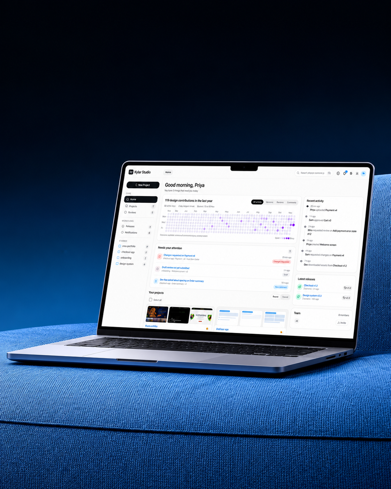

Kylar StudioVersion Control and Approvals for Designers
How I'm Bringing a GitHub-Style Workflow to Design.
Work in Progress
Kylar Studio is a concept I'm currently designing. Screens and decisions shown here may change as the product develops. Names and data in the screens are sample content.

3 Team Roles
Designer, manager, and developer work in the same project.
2 Design Sources
Figma frames and Claude Design exports live together.
4-Step Figma Import
Connect, link, pick frames, and confirm.
Full Version History
Preview, trace the source, and restore a version.
What Kylar Studio Does
Kylar Studio is a GitHub-inspired platform where designers version their work, send it for approval, and hand approved designs to developers. Teams keep Figma and Claude Design files in one project, follow how each screen changes, and know which version has been signed off.
Perspective
“Everyone should be able to tell which design is approved without having to ask.”
My Role
DesignerShapes the experience
+
DeveloperBuilds it in code
=
Design EngineerTakes an idea from sketch to screen
The Problem
Developers have an established way to track changes, review work, and release it. Design work often lacks that shared trail.
Insight
The hard part is not storing design files. It is knowing which one is current, what was approved, and what is ready to build.
Must Show
Why
What needs my attention
Requested changes and new comments should not get lost
Version history
Shows how a screen changed over time
Approval status
Tells the team whether a design can be built
Latest releases
Gives developers one version to refer to
Research and Early Thinking
Three problems shaped the starting point. These are working assumptions until they are tested.
Scattered files
Design files sit in different tools and links, so the latest one is hard to find.
Unclear approval
Sign-off happens in chats and meetings, with no lasting record.
Messy handoff
Developers can end up building from a design that has since changed.
Borrowing From Code
My starting reference was GitHub. For each idea developers rely on, I asked what a designer would call it and why they would need it.
Repository→ProjectOne home for Figma and Claude Design files
Commit→VersionA saved moment you can look back at
Pull request→ReviewScreens sent to a manager for sign-off
Merge→ApprovalThe design is locked and trusted
Release→HandoffSpecs, assets, and tokens for developers
The idea in one picture: the life of a single screen
v1First draft
v2Sent for review
v3Changes requested
v4Approved and locked
Perspective
“GitHub gave code a shared history. What should that feel like for designers?”
The Workflow
A design moves along one path, and its status is visible at every step.
Step
What Happens
Bring it in
Import frames from Figma, or upload a design such as a Claude Design export
Draft
New work starts as a draft version inside a project
In review
The designer submits the screen for review
Changes requested
The reviewer sends it back, and a new version is uploaded
Approved
The signed-off version is the one the team builds from
Implemented
The screen is marked once it has been built
Importing from Figma
Import is split into four short steps: Connect, Link, Frames, and Confirm. The first screen says up front that Kylar Studio only reads from Figma, and imported frames arrive as drafts, so nothing skips review.
The product is organised from the whole workspace down to a single version, so people always know where they are. Breadcrumbs at the top follow the same path.
HomeWhat needs me todayKylar Studio
ProjectsEvery body of work and its status/ Projects
Home, Projects, and Reviews cover the everyday work.
Workflows
Releases and Notifications track what changed and what shipped.
Starred
Pinned projects stay one click away in the sidebar.
Three Roles
Each project lists its designer, manager, and developer.
The Decision Journey
DECISION 01
Start with what needs you
Home opens on “Needs your attention”: requested changes, unsubmitted drafts, and new comments, beside recent activity and the latest releases.
Without it
With it
Open each project to check for updates
See pending items on the first screen
Why it matters
A review tool is only useful if people know it is their turn.
DECISION 02
Projects you can read at a glance
Each project card shows screen previews, screen count, last update, source, and status. Search, status and source filters, sorting, and a grid or list view help as the workspace grows.
Status and source are readable without opening a project.
Why it matters
Draft, In review, and Approved have their own colour and label, so colour is never the only clue.
DECISION 03
A repository, in a designer’s language
A project borrows GitHub’s tabbed layout, but lists screens instead of files. Folders separate Flows and Components, and the side panel shows the latest release, open reviews, and members.
Each screen row carries its status, source, and order.
Why it matters
“Implemented” sits beside “Approved”, because signed off and built are different things.
DECISION 04
Never lose the original
From any screen, “View source” shows what a version was created from: the type, file, who added it, and its status. People can download the original or open the rendered design, while version history offers restore.
A preview shows how it looks. The source proves where it came from.
DECISION 05
A contribution graph and named releases
Two more patterns come from code. The activity graph shows a year of design work, and releases such as Checkout v1.2 give approved work a name.
Why it matters
Familiar patterns help explain a new idea, and a named release gives developers one thing to point to.
The Final Product
Four views show the product from daily overview to a single version. Select an image to see it full size.
Home: activity, pending items, releases, and projects.Projects: every design project and where it stands.Project: screens, folders, members, and releases.Screen: preview, source, and version history.
Tools and Skills
Design Tools
FigmaInterface design and components
Claude DesignExploring and generating screens
Development Tools
VS CodeWriting and editing the code
ClaudeAI-assisted development
Claude Skills
I used Claude Skills to define the design rules, so screens stay consistent as the product grows.
ColorsColour rules, including how each status looks
Typography & SpacingType scale and spacing rules across screens
MotionHow elements move and respond
ComponentsRules for building consistent, reusable parts
Skills Used as a Designer
Product Thinking
Information Architecture
User Flows
Wireframing
UI Design
Interaction Design
Design Systems
Prototyping
UX Writing
Developer Handoff
Reflection
Test the approval flow early
Walk designers and managers through a review and find where the status is unclear.
Bring developers in
Ask whether the specs, assets, and tokens are enough to start building.
Plan version comparison
Explore how two versions of a screen can be compared side by side.
Perspective
“The goal is not more process for designers. It is less doubt about what is final.”